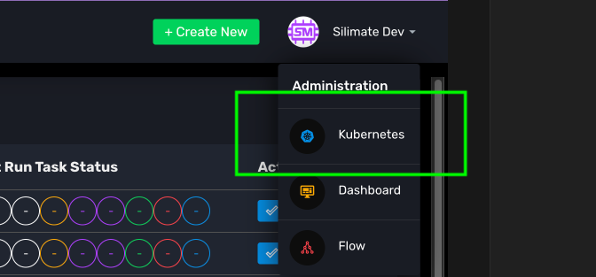
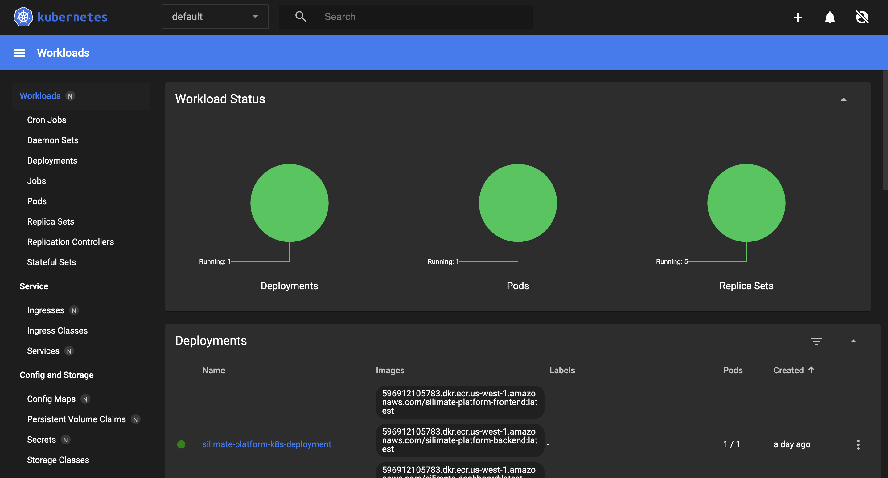
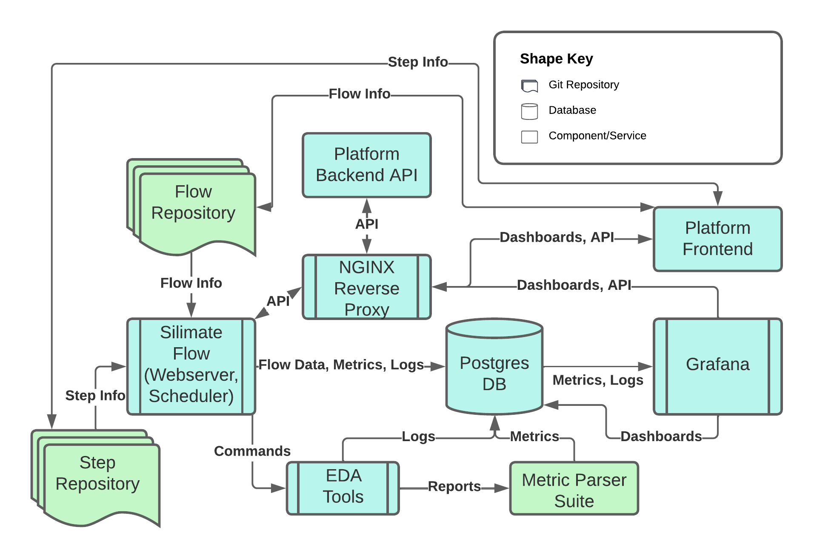

Infrastructure
Silimate Platform is built on Kubernetes (K8s) and Docker Engine. It runs several microservices and by default syncs from the stable upstream Docker image repository.
Brief Intro to Kubernetes (K8s) and Docker Engine
Docker is a tool to provide isolation between resources in running applications via containerization. It runs one level higher than virtualization (thus having less overhead than KVM and other virtual machine approaches), since applications still share the OS kernel of the host.
Kubernetes is a tool to manage/deploy Docker containers that need to access each other and various resources, e.g., storage, disk, etc. It can run on a single server with minikube, which is a simple K8s implementation, or kubeadm for multi-node implementation.
Pros/Cons of K8s and Docker
Pros: - K8s makes it very easy to describe how infrastructure should be set up with K8s YAML files - Docker provides isolation between tool libraries, environment variables, loaded modules, etc. - K8s can prevent accidental write access to certain resources, e.g., host files outside of a given directory - K8s can detect when services are down and try to recover them - K8s can monitor service status and send email/Slack notifications when any microservice has a problem - Otherwise, one service can die silently, making problems difficult to debug - Very easy to receive updates, simply reload Docker containers
Cons: - Small (5-10%) overhead associated with containers - Learning curve for developing infrastructure with K8s can be difficult
For the last "con", it should be noted that this difficulty applies mainly to application development. Once deployed, it tends to be fairly straightforward to manage services.
Accessing K8s
K8s can be accessed and administrated via a GUI by (1) navigating to the K8s platform and selecting Kubernetes in the top-right corner, or (2) connecting via an external K8s management tool on port 8443 (this port should be forwarded when SSHing into the host server).

Once the dashboard is loaded, you can click Skip and load the dashboard, which should look like below:

Architecture Description
Below is a representation of the microservices and how they interplay with one another.

Inside of Kubernetes, there are several resources that describe the infrastructure. There is a single deployment called silimate-platform-k8s-deployment which instantiates a single pod containing five containers:
- silimate-platform-frontend which contains NGINX reverse proxy and the frontend service (on port )
- silimate-platform-backend which contains the backend API server
- silimate-dashboard which contains the Grafana dashboard with the necessary plugins
- silimate-flow which is instantiated twice, with one instance corresponding to the flow scheduler and the other to an API server which powers the CLI and the front-end
Besides the deployment, the Docker containers need access to various filesystem resources. This is done with 4 persistent volumes (and associated volume claims), mounted via NFS:
- logs-volume which saves backups of the logs in /var/logs inside each container
- pdk-volume which mounts the AWS ECR repo containing PDK information at /pdk inside each container
- host-volume which mounts the host / at /host to give read-only access to the filesystem inside each container
- silimate-volume which mounts the /silimate directory at /silimate inside each container
There are a few other noteworthy Kubernetes resources that are instantiated for final setup:
- A service called silimate-platform-service, which exposes the frontend
- A config map called silimate-config, which sets up customer-specific settings
- An ECR secret for retrieving Docker containers from the upstream repository called aws-ecr-secret
K8s Make commands
WIP
Installation Guide
Installation simply involves installing Docker and minikube/kubeadm and running the above make commands.